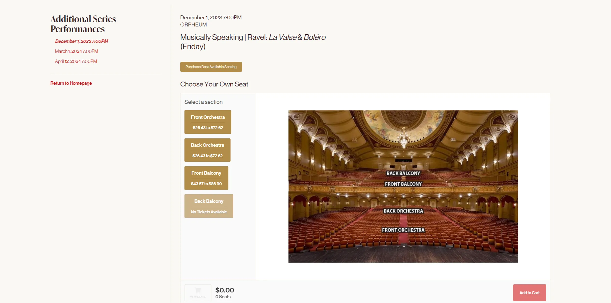
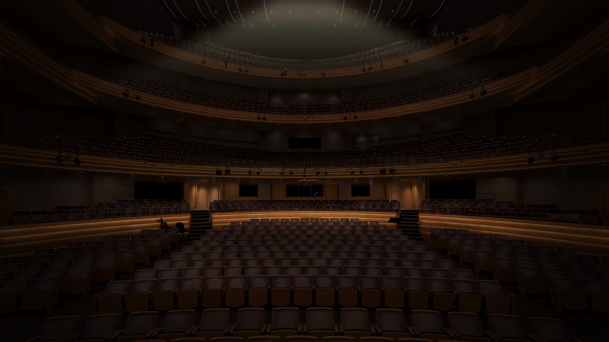
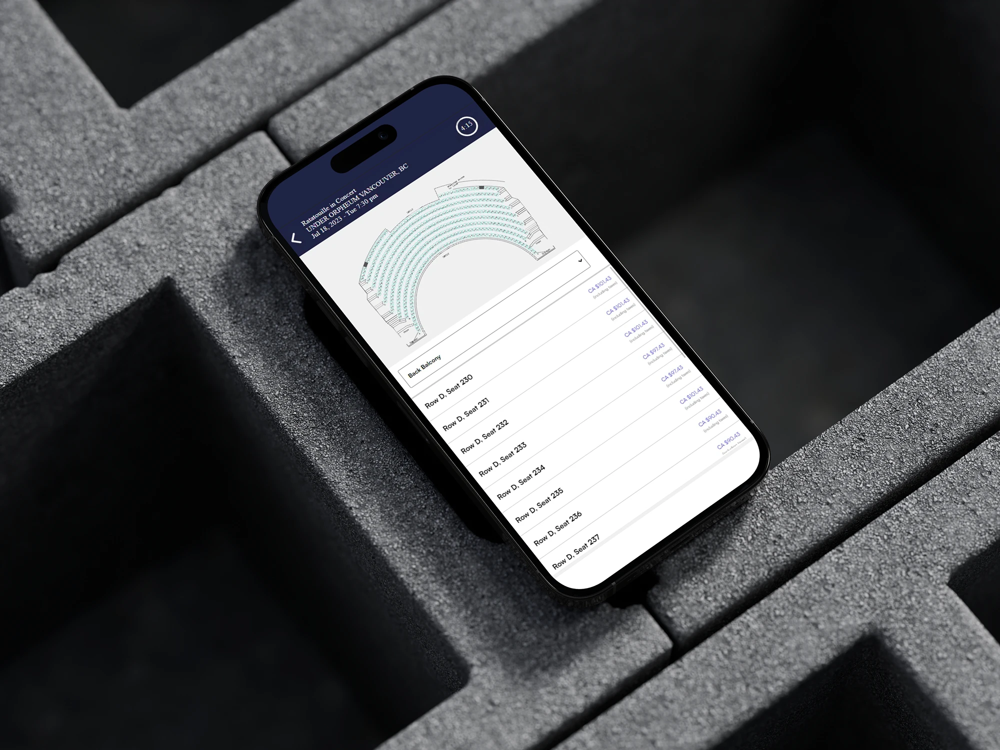
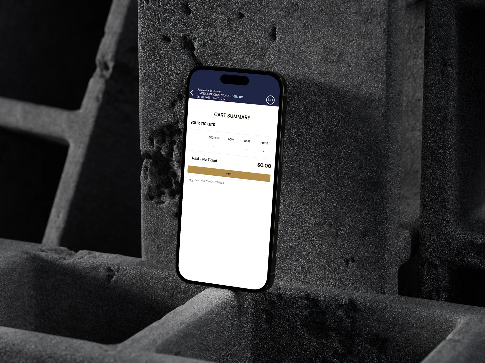
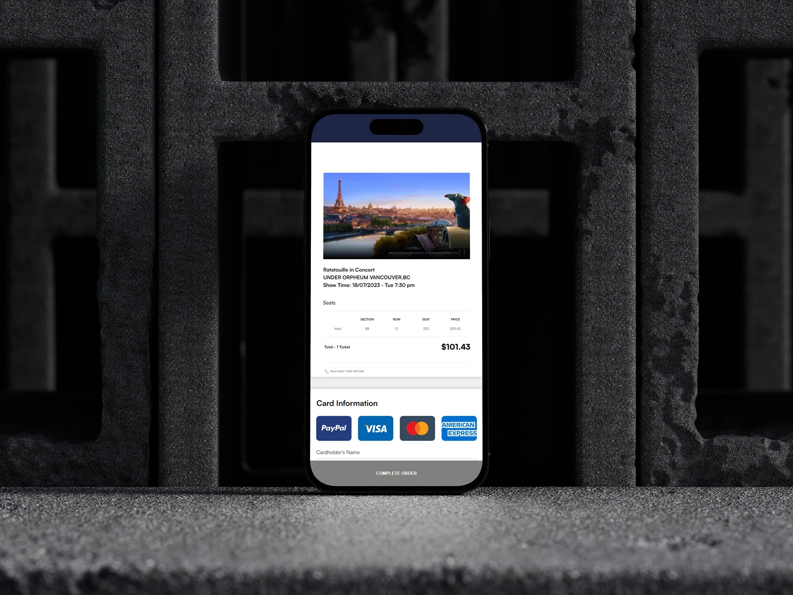

Overview: As part of a vibrant five-member team for the Vancouver Symphony Orchestra's 'Ratatouille in Concert' initiative, I led the charge in UX research, visual design, and web development. Our collective goal was to revolutionize the ticket purchasing process, making it not only immersive but also intuitively user-friendly. My primary objective extended beyond merely revamping the webpage; it was about simplifying and refining the user journey, ensuring a seamless ticket acquisition experience. This project is a testament to my commitment to elevating user engagement and my proficiency in crafting effective and engaging web solutions.
Users can begin by navigating to their preferred seating section. The interactive orchestra background fills the entire screen, creating an immersive experience and providing a clear view of the concert environment. By selecting a section, users will be taken to a detailed page displaying available seats and specific pricing. Clicking on an available seat opens a pop-up where users can choose ticket types, such as adult, senior, child, or student. A cart summary is displayed on the right for easy review before proceeding to payment.
Feel free to navigate the above preview!
UI/UX designer & Web developer
5 weeks

Design: Upon reviewing the webpage, I noted that while the seat map did have basic animation feedback, it was rather uninspiring. It simply highlighted the seat sections upon hovering, which, although functional, didn't contribute to an immersive user experience. To address this, I implemented a more sophisticated spotlight effect. This feature activates when a user hovers over a seat section, enhancing the highlight with a touch of elegance. This improvement not only makes the interaction more visually pleasing but also subtly elevates the overall feel of the webpage, better reflecting the refined atmosphere of an orchestral concert.
Code: The most intricate aspect of this project was animating the spotlight effect triggered by user hover over the seat sections. To achieve this, I utilized Photoshop to create four distinct images of highlighted seat sections. These images were then strategically layered using CSS. With a nuanced application of JavaScript, I successfully animated the opacity of each image, corresponding to the user's hover over specific sections. This approach allowed for a seamless and visually engaging interaction, showcasing my ability to blend creative design with technical execution.

Design: I crafted a user experience that mimics the depth and ambiance of a real theater setting. As users navigate the site, especially when selecting their seats, the background subtly shifts in the opposite direction of their mouse movement. This not only adds an element of immersion but also stirs emotions and memories akin to being in a theater.
Code: I first established a minimum screen width criterion to ensure the effect was optimal on various devices, prioritizing consistency in visual presentation. The primary focus was on accurately tracking user mouse movements and converting these movements into corresponding shifts in the webpage's background through CSS transformations. This method resulted in a smooth depth effect, making the user's interaction with the seat selection more immersive.



In the development of the 'Ratatouille in Concert' webpage for the Vancouver Symphony Orchestra, I encountered and overcame several challenges to improve the user experience, especially in tailoring the site for mobile users. Recognizing the limitations of touchscreens, I shifted my focus from the immersive and interactive desktop elements to a more streamlined mobile experience. This decision was informed by user behavior studies, including one cited by Tinger in 2022, which highlighted that 40% of mobile users abandon websites that take over 3 seconds to load, and 46% are unlikely to revisit sites that they've had trouble accessing.
Considering these insights, I chose not to replicate the desktop version's complex animations and seat selection process for the mobile interface. Instead, I adopted a more direct approach, leading users straight to the seat map page, thereby bypassing the more intricate ticket section page. This strategy was influenced by my analysis of other ticketing platforms like Ticketmaster and Eventbrite.
My mobile design concentrated on three key elements crucial for mobile users: selecting a seat section, direct seat selection, and a simplified list format. By streamlining the process, I aimed to reduce user anxiety and expedite their journey to the final purchase with fewer steps. This approach not only caters to the typical mobile user's preference for quick and straightforward interactions but also addresses common issues like slower internet speeds and smaller screen sizes on mobile devices. By simplifying the navigation and focusing on essential functionalities, I enhanced the overall user experience, making it more intuitive and efficient, particularly for users on the go. This strategic adaptation ensures that the 'Ratatouille in Concert' webpage is not only aesthetically pleasing and functional on desktops but also equally efficient and user-friendly on mobile devices.
"Mobile vs Desktop: 13 Essential User Behaviors."Throughout the development phase of the project, I effectively integrated the knowledge I had acquired to execute tasks with efficiency. A significant portion of the JavaScript code was developed using insights from W3Schools, significantly enhanced by the strategic application of AI tools. As a novice in web development, the use of AI was instrumental not only for debugging but also for providing advanced animation suggestions and bridging gaps in my technical knowledge. It greatly accelerated my workflow and enabled me to realize designs beyond my initial skill level.
My foray into layout techniques like flex and grid, coupled with manipulating elements via the web inspector, was both enjoyable and skill-enhancing. Despite facing initial complexities and redundancies in the code, the combined effort of our team was crucial for the successful completion of our first web development project. This experience not only honed my technical skills but also highlighted the significant advantages of using AI to overcome limitations and tackle complex development challenges.
Additionally, being part of a collaborative team, I learned the value of open communication, shared problem-solving, and mutual support, which were key in navigating through challenges and achieving our project goals. My ability to adapt, integrate feedback, and work cohesively with others was as integral to our success as my technical contributions.